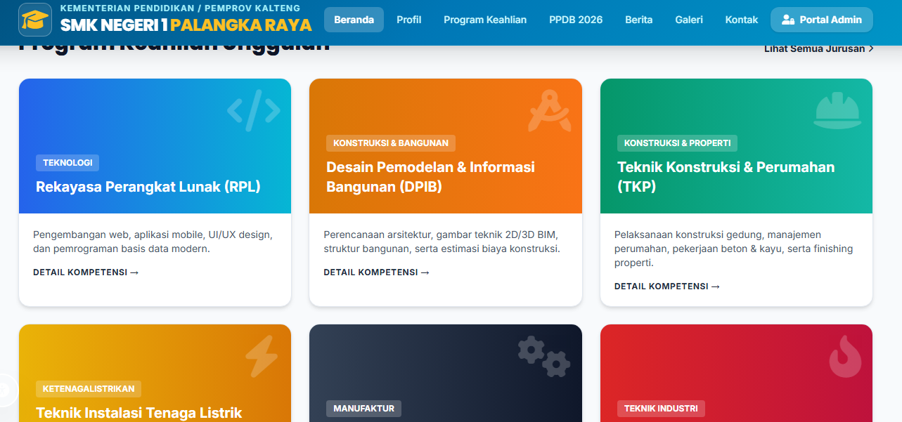
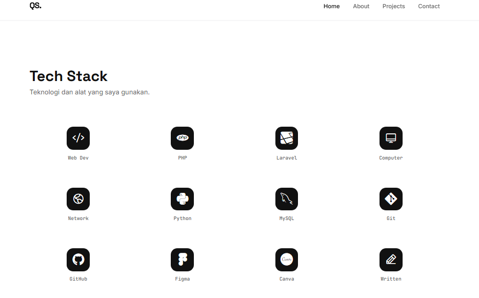
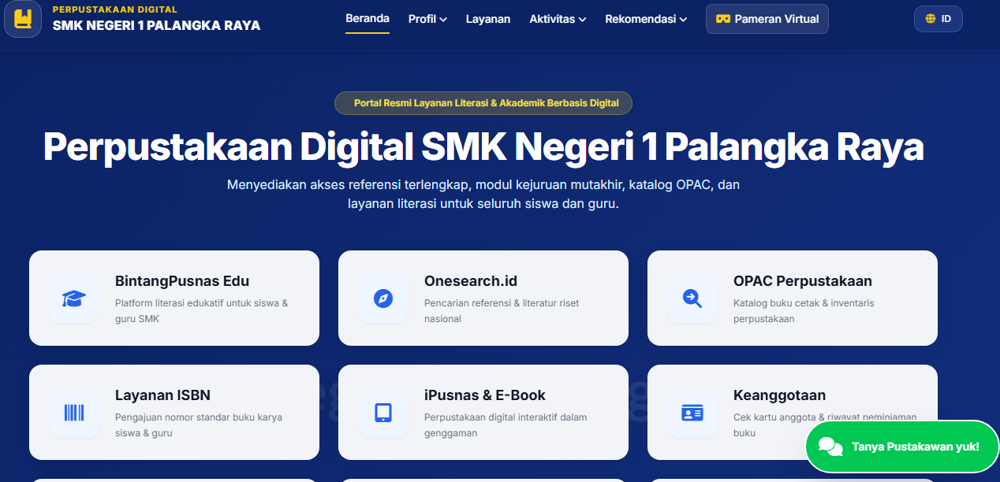

School Management Website
Website manajemen sekolah yang dirancang untuk membantu pihak admin mengelola data siswa, guru, dan kegiatan akademik secara terpusat — menggantikan pencatatan manual dengan sistem digital yang lebih rapi dan efisien.
Fitur Utama
- Dashboard admin untuk mengelola data siswa dan guru
- Input dan rekap nilai secara digital
- Manajemen jadwal pelajaran
- Pencarian dan filter data siswa yang cepat
- Tampilan responsif di berbagai ukuran perangkat

Minimalist E-Commerce
Desain antarmuka toko online dengan pendekatan minimalis, dimulai dari proses wireframing dan prototyping di Figma sebelum diimplementasikan menjadi kode nyata menggunakan Tailwind CSS dan JavaScript.
Fitur Utama
- Prototipe interaktif dirancang penuh di Figma sebelum masuk tahap coding
- Halaman katalog produk dengan grid yang bersih dan konsisten
- Halaman detail produk lengkap dengan galeri gambar
- Fungsi keranjang belanja sederhana (tambah & hapus item) dengan JavaScript
- Desain mobile-first yang tetap nyaman di layar kecil

Digital Library System
Sistem perpustakaan digital berbasis Laravel yang membantu sekolah mengelola koleksi buku, transaksi peminjaman, dan data anggota secara digital — menggantikan pencatatan manual di buku besar.
Fitur Utama
- CRUD data buku lengkap dengan kategori dan status ketersediaan
- Sistem peminjaman dan pengembalian buku dengan status real-time
- Manajemen data anggota perpustakaan
- Autentikasi login terpisah untuk admin dan anggota
- Struktur database relasional dengan MySQL untuk menjaga integritas data

Monochrome Portfolio
Template portofolio pribadi bergaya monokrom, dibangun dari nol menggunakan HTML, Tailwind CSS, dan vanilla JavaScript. Berfokus pada tipografi yang bersih, whitespace yang lega, dan micro-interaction halus tanpa bergantung pada framework JavaScript tambahan.
Fitur Utama
- Navigasi responsif lengkap dengan menu mobile
- Animasi scroll-reveal berbasis Intersection Observer API
- Efek gambar grayscale-ke-warna saat kartu di-hover
- Struktur kode modular — CSS dan JavaScript dipisah per komponen
- Dibangun murni dengan HTML, CSS, dan JavaScript tanpa framework front-end